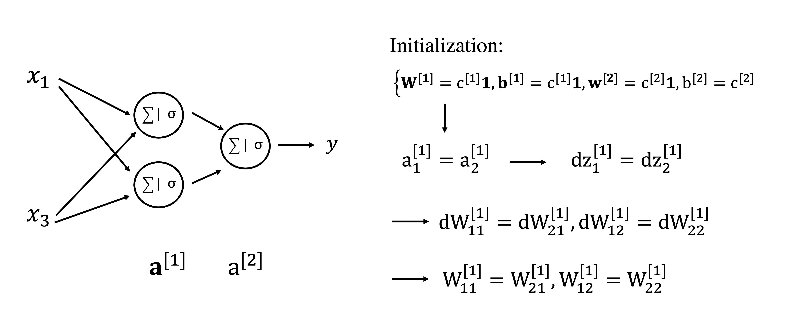

More on Neural Networks
In this lecture, we will delve into some more advanced topics associated to the creation and training of deep neural networks.
Backpropagation
First of all, once a neural network architecture has been defined for the problem at hand, we need a method that can learn the best set of free parameters of such nonlinear function represented as \(f_\theta\).
More specifically, we want to initialize the network with some random weights and biases (we will soon discuss how such initialization can be performed) and use the training data at hand to improve our weights and biases in order to minimize a certain loss function. Whilst this can be easily done by means of gradient based optimizers like those presented in Lecture 3, a key ingredient that we need to provide to such algorithms is represented by the gradient of the loss function with respect to each and every weight and bias parameters.
We have already alluded at a technique that can do so whilst discussing a simple logistic regression model. This is generally referred to by the ML community as back-propagation and more broadly by the mathematical community as Reverse Automatic Differentiation. Let's start by taking the same schematic diagram used for the logistic regression example and generalize it to a N-layer NN:
The main difference here, which we will need to discuss in details, is the fact that in the forward pass we feed the input into a stack of linear layers prior to computing the loss function. The backpropagation does need to be able to keep track of the chain of operations (i.e., computational graph) and traverse it back. However, as already done for the logistic regression model, all we need to do is to write the entire chain of operations as a chain of atomic ones that we can then easily traverse back. Let's do this for the network above and a single training sample \(\textbf{x}\):
Given such a chain of operations, we are now able to find the derivatives of the loss function with respect to any of the weights or biases. As an example we consider here \(\partial l / \partial \textbf{W}^{[2]}\):
Assuming for simplicity that the binary cross-entropy and sigmoid functions are used here as the loss and activation functions, respectively:
which put together:
where \(\cdot\) is used to refer to element-wise products. Similar results can be obtained for the bias vector and for both weights and biases in the other layers as depicted in the figure below for a 2-layer NN:

To conclude, the backpropagation equations in the diagram above are now generalized for the case of \(N_s\) training samples \(\textbf{X} \in \mathbb{R}^{N \times N_s}\) and a generic activation function \(\sigma\) whose derivative is denoted as \(\sigma'\). Here we still assume an output of dimensionality one -- \(\textbf{Y} \in \mathbb{R}^{1 \times N_s}\):
Initialization
Neural networks are highly nonlinear functions. The associated cost function used in the training process in order to optimize the network weights and biases is therefore non-convex and contains several local minima and saddle points.
A key component in non-convex optimization is represented by the starting guess of the parameters to optimize, which in the context of deep learning is identified by initialization of weights and biases. Whilst a proper initialization has been shown to be key to a succesful training of deep train NNs, this is a very active area of research as initialization strategies are so far mostly based on heuristic arguments and experience.
Zero initialization
First of all, let's highlight a bad choice of initialization that can compromise the training no matter the architecture of the network and other hyperparamters. A common choice in standard optimization in the absence of any strong prior information is to initalize all the paramters to zero: if we decide to follow such a strategy when training a NN, we will soon realize that training is stagnant due to the so called symmetry problem (also referred to as symmetric gradients). Note that a similar situation arises also if we choose a constant values for weights and biases (e.g., \(c^{[1]}\) for all the weights and biases in the first layer and \(c^{[2]}\) for all the weights and biases in the second layer):
Let's take a look at this with an example:

Since the activations are constant vectors, back-propagation produces constant updates for the weights (and biases), leading to weights and biases to never lose the initial symmetry.
Random initialization
A more appropriate way to initialize the weights of a neural network is to sample their values from random distributions, for example: $$ w_{ij}^{[.]} \sim \mathcal{N}(0, 0.01) $$ where the choice of the variance is based on the following trade-off: too small variance leads to the vanishing gradient problem (i.e., slow training), whilst too high variance leads to the exploding gradient problem (i.e., unstable training). On the other hand, for the biases we can use zero or a constant value. If you remember, we have already mentioned this when discussing the ReLU activation function: a good strategy to limit the amount of negative values as input to this activation function is to choose a small constant bias (e.g., \(b=0.1\)).
Whilst this approach provides a good starting point for stable training of neural networks, more advanced initialization strategies have been proposed in the literature:
-
Uniform: the weights are initialized with uniform distributions whose variance depend on the number of units in the layer: $$ w_{ij}^{[k]} \sim \mathcal{U}(-1/\sqrt{N^{[k]}}, 1/\sqrt{N^{[k]}}) $$ or $$ w_{ij}^{[k]} \sim \mathcal{U}(-\sqrt{6/(N^{[k-1]}+N^{[k]})}, \sqrt{6/(N^{[k-1]}+N^{[k]})}) $$ This strategy is commonly used with FC layers.
-
Xavier: the weights are initialized with normal distributions whose variance depend on the number of units in the layer: $$ w_{ij}^{[k]} \sim \mathcal{N}(0, 1/N^{[k]}) $$ This strategy ensures that the variance remains the same across the layers. Xavier initialization is very popular especially in layers using Tanh activations.
-
He: the weights are initialized with normal distributions whose variance depend on the number of units in the layer: $$ w_{ij}^{[k]} \sim \mathcal{N}(0, 2/N^{[k]}) $$ This strategy ensures that the variance remains the same across the layers. He initialization is very popular especially in layers using ReLU activations.
Why Deep Learning took off in the last century
Before moving onto the last topic of this lecture, a unified statistical view of loss functions in deep learning, let's try to answer a question that many of you may ask: what makes NNs so popular these days and why deep learning took off in the last decade?
By now, we have made ourself familar with the concept of neural networks, learned about its basic building block (the so-called perceptron) and how by simply horizontally and vertically stacking multiple percetrons we can create universal function approximators that can be trained to learn very complex nonlinear relationships between inputs and targets (provided availability of a large enough amount of training data). The process of creating and training NNs relies on the following four key ingredients:
- linear algebra operations: matrix-vector and matrix-matrix multiplications (at least within the context of FC networks);
- activations: nonlinear functions that enable the learning of complex nonlinear mappings;
- loss functions: functions that can be used to evaluate the goodness of the model in terms of predicting targets from inputs;
- learning algorithms: optimization methods that can produce the best weights and biases using gradient information;
Eventually, most of the underlying theory of NNs was already fairly mature in 70s and 80s; nevertheless, until the early 2000, research in the field of artificial neural networks was still considered a niche domain mostly theoretical and with little practical implications. So, what did lead to the renaissance of Deep Learning?
Two key factors in the popularity and success of Neural Networks growth are undoubtedly:
- larger datasets: with the growth of the internet and social media, a digital revolution has started since the beginning of the new century, where datasets of ever increasing size can be easily sourced. This applies both to images and text as well as audio and video content.
- larger networks: with the emergence of new hardware technology such as GPUs, training large deep networks is nowadays possible, not only for large corporations like Google or Microsoft but also in Academia or for small- and medium-size enterprises that want to leverage their data to make data-driven business decisions.
Alongside the data and harwdare revolution, a number of important algorithmic discoveries have also led to faster, more robust training of NNs making this process easier and more accessible to domain scientists in a variety of scientific fields. Some of them have been already discussed, but we wish here to put more emphasis on them:
- MSE --> Cross-entropy: whilst in the past the mean square error (MSE) loss was used for pretty much every task, nowadays classification or semantic segmentation tasks are more commonly solved by means of Cross-entropy loss functions. This shift in training strategy is mostly due to the fact that the ML community and the statistical community got closer to each other in the last two decades, which lead to the development of strong statistical foundations in the theory of deep learning;
- Sigmoid --> ReLU: whilst continuous, differentiable activation functions used to be a must in the past mostly due to the belief that gradient descent algorithms (and back-propagation) needs these kind of functions to behave correctly, it is now clear that this constraint can be greatly related. Piece-wise linear activation functions like ReLU are nowadays not only used but pretty much the de-facto standard for hidden layers in deep neural networks. Jarrett et al. (2009) observed that "using a rectifying nonlinearity is the single most important factor in improving the performance of a recognition system".
Maximum likelihood estimators
To conclude, we would like to revisit the loss functions already introduced in the context of linear and logistic regression models and introduce some other loss functions that are commonly employed to train neural networks.
However, whilst so far we have chosen different loss functions for each task (regression vs. classification) without really providing a statistical motivation of such choices, in this section we will instead try to define a common framework based on the concept of Maximum Likelihood Estimations (MLE).
Let's start by considering a set of samples drawn from the true (but unknown) distribution:
Second, a parametric family of probability distribution is defined:
This distribution maps any vector \(\mathbf{x}\) to a real number and is generally referred to as the likelihood function. Its free parameters \(\theta\) must be chosen such that this probability distribution is as close as possible to the true one.
As an example, if we consider a multi-variate gaussian distribution with uncorrelated members, the free parameters become \(\theta = \{ \boldsymbol \mu, \sigma\}\) and the probability density function becomes:
We can now define the MLE as follows:
Assuming now statistical independence between the samples \(\mathbf{x}^{(i)}\), the equation above can be rewritten as:
Simply put, maximizing the parametric probability density function is shown to be equivalent to minimizing the negative log likelihood of the same distribution. An optimization problem must be therefore solved to find the most suitable free parameters. Going back to the multi-variate gaussian example, let's assume we are interested to estimate the mean (whilst we keep the variance fixed):
Computing the gradient and imposing it to be zero gives us the point estimate of \(\boldsymbol \mu_{ML}\):
which is nothing more than the well-known sample mean of the distribution.
In order to apply the same framework to learning problems like thoose arising in DL, the ML estimation is now extended to the case of conditional probabilities where we are given a set of training pairs \((\mathbf{x}, y)^{(i)}\):
Regression
Linear regression
Let's first apply this framework to a simple linear regression problem. Here, under the assumption of gaussian noise, the likelihood can be written as a multi-variate gaussian distribution:
Plugging this distribution into the negative log likelihood expression, we obtain:
This cost function can be seen to be a rescaled version of the MSE function previously introduced as the loss function for the linear regression model. Note however, that this model is not only more rigorous from a statistical point of view but provides also a natural way to handle training samples with different confidence. By using sample-dependant scaling factors (\(\sigma^{(i)}\)), different samples can be chosen to contribute more or less to the training process.
Multi-layer perceptron regression
A very similar derivation can be performed for a neural network composed by one or more MLPs. Eventually we simply need to swap the previously linearly predicted output \(\hat{y}=\tilde{\mathbf{x}}^T \boldsymbol \theta\) with a new output produced by the chosen nonlinear functional \(\hat{y}=f_\theta(\mathbf{x})\).
In conclusion, we must remember that the MSE loss function, commonly used for regression tasks in ML and DL, is a MLE in disguise.
Classification
Binary classification
In statistical learning, a Bernoulli distribution is commonly used for the task of binary (i.e., 2 label) classification:
where \(y\) is the outcome and \(\phi\) is its probability that we wish to learn by means of a model (i.e., logistic regression or MLP). Moreover, as we wish to learn a probability this value must be bound between 0 and 1; this can be easily achieved by feeding the output of the model into a sigmoid function \(\sigma\):
Put together:
which is the same loss function that we have introduced and discussed in details in the context of logistic regression.
Once again, we note how we have here simply defined a MLE for a classification task and obtained the well-know binary cross-entropy loss function.
Multi-label classification
An extension of binary classification, multi-label classification aims at producing an estimate of the most likely class within a set of \(N_c\) classes.
The combination of a Bernoulli distribution and sigmoid activation used for the binary classifier is here replaced by a Multinoulli distribution and softmax activation, where the latter is defined as follows:
A property of such activation function is that it takes as input a vector of numbers (sometimes called logits)) and produces as output a vector of probabilities (i.e., \(y_i>0\) and \(\sum_{i=1}^{N_c} y_i=1\)).
Put together:
where the true labels \(\mathbf{y}^{(i)}\) are one-hot encoded vectors (i.e., \(y_{j=j_{true}}^{(i)}=1\) and \(y_{j \neq j_{true}}^{(i)}=0\)).
To conclude, let's try to get more insights into why ML estimators work so succesfully. In order to do so, we start by defining a measure of similarity between the two distributions of interest:
- empirical distribution of the data: \(p_{data}(\mathbf{X})\)
- parametric model distribution: \(p_{model}(\mathbf{X}; \theta)\)
This can be achieved by means of the previously introduced Kullback-Leibler divergence, which we can write as follows:
Since we are interested to estimate the free-parameters \(\theta\) such that the model distribution matches that of the data, an equivalent optimization problem can be written with the help of the KL divergence:
where the data probability has been removed in the second term since it is independent of \(\theta\). We can conclude that \(\theta_{KL}=\theta_{ML}\) and therefore minimizing the KL divergence between the model and data distributions is the same as maximizing their cross-entropy (as done by the ML estimator).